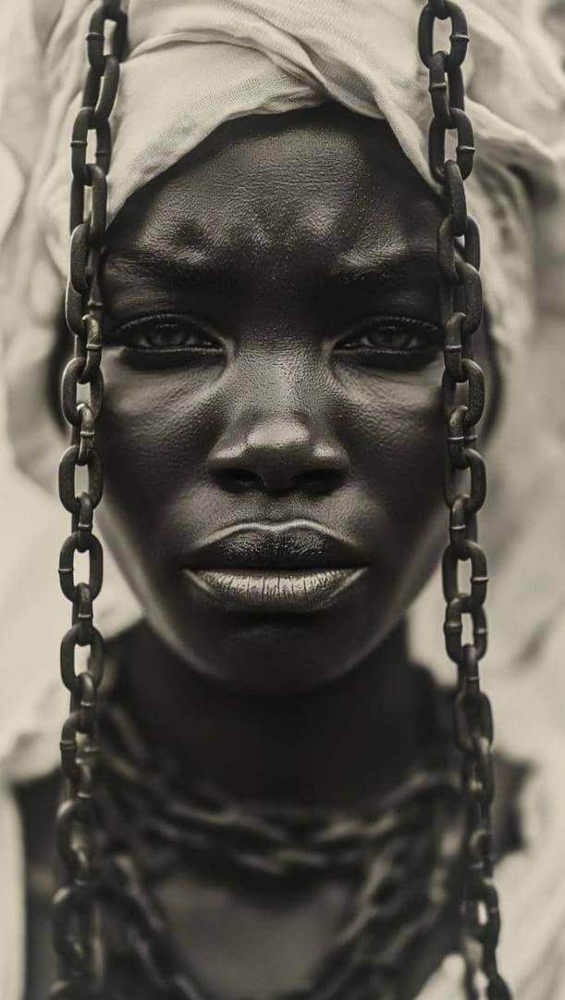
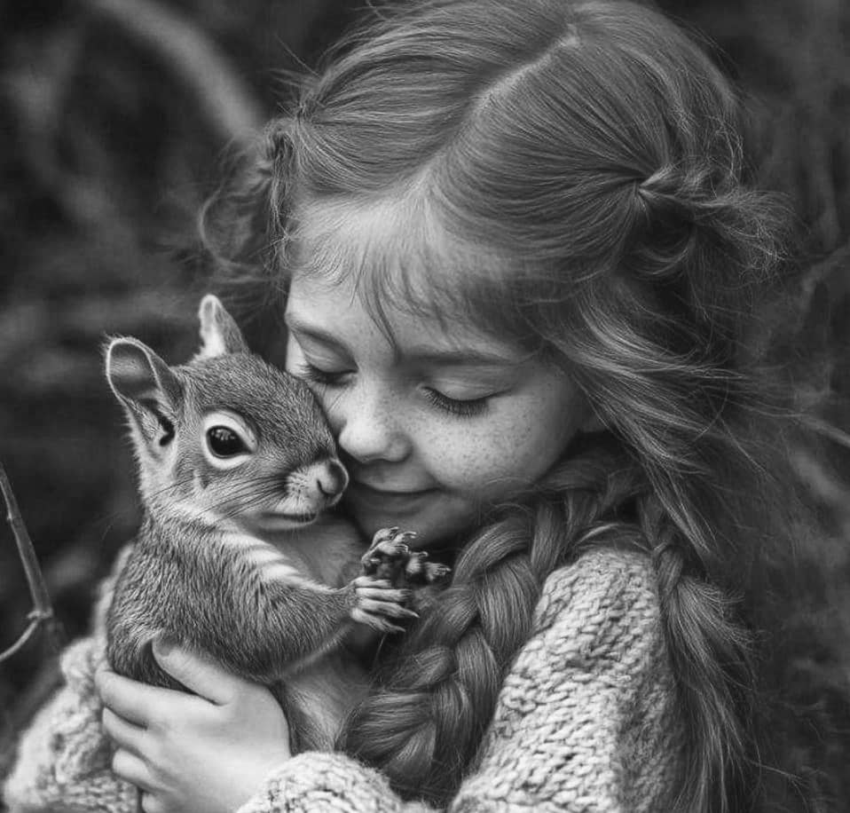

This black-and-white photo of an African woman reflects her beauty, strength,
and cultural heritage. The absence of color brings out the depth and emotion in her facial features.
It is not just a portrait—it tells a story of history, identity, and pride of a nation.This dew-kissed flower is like a soft melody in the heart of dawn.
The dewdrops on its petals shimmer like nature's tears,
reflecting a sense of freshness and purity. This simple moment captures the endless peace and beauty of nature.This woman, blindfolded with a cloth, symbolizes silence and introspection.
Unable to see with her eyes,
she is compelled to see with her heart and connect through her emotions. The image holds a sense of mystery,
inner strength, and profound calmness.
 A little girl with sparkling eyes and
a sweet smile is playing with a tiny squirrel in a corner of the park. The scene is full of innocence, childhood joy,
and a natural bond between human and animal. Every motion of the girl and the squirrel tells a story of friendship and trust.